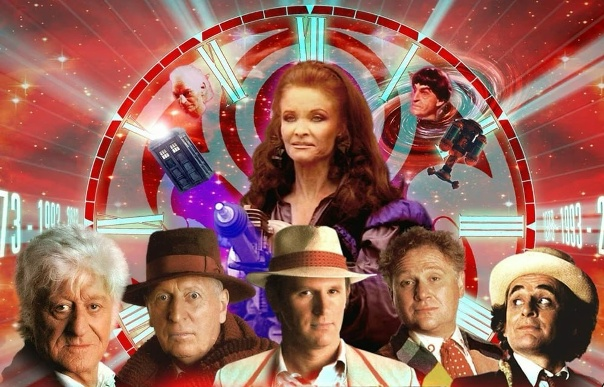
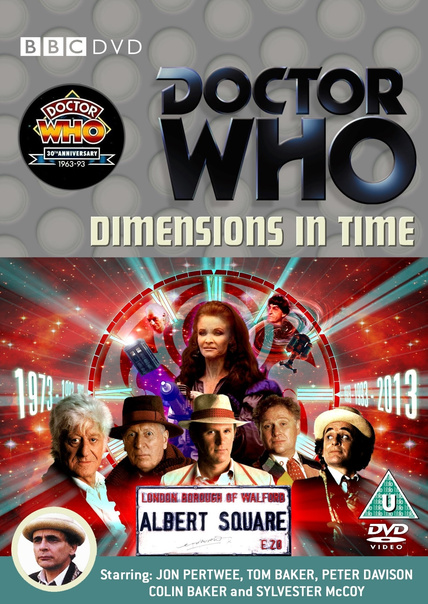

Эра Седьмого Доктора (мини-эпизоды)
<<< НАЗАД ||| Измерения во времени ||| ДАЛЬШЕ >>>
DVO [BaibakoTV], VO [M.KVADRAT] или Original [ENG]
Субтитры: Русские и Английские

эпизоды объединены в одно видео
Dimensions in Time
мини-эпизод для «Детей в нужде»
Дата выхода: 26-27 ноября 1993
Формат: 2 эпизода по 7 и 9 мин.
 |  помощник |  помощник | помощник | помощник |  помощник |
 помощник |  помощник |  помощник |  помощник |  помощник |  помощник |
| Ссылки для скачивания: |
|---|
Рани открывает временную воронку и решает заточить в ней все воплощения Доктора. Четвёртый Доктор предупреждает остальных: Первый и Второй уже пойманы, а Рани собирается навечно закрыть их во временной ловушке в лондонском Ист-Энде. Седьмой Доктор и Эйс оказываются в 1973 году у «Катти Сарк», но временные смещения начинают перебрасывать спутников между разными Докторами и эпохами — 1973, 1993 и 2013.
Двухчастный мини-эпизод к 30-летию сериала, показанный 26–27 ноября 1993 года в рамках благотворительной акции «Дети в нужде». Появились Третий, Четвёртый, Пятый, Шестой и Седьмой Доктора, а Первый и Второй показаны через архивные клипы. Это первый телевизионный кроссовер «Доктора Кто» с другой франшизой — персонажи встречают жителей из мыльной оперы «Ист-Эндерс». Последнее появление Джона Пертви в роли Третьего Доктора. Сериал собрал более 13 миллионов зрителей и собрал свыше 101 000 фунтов на благотворительность. Актёры и съёмочная группа работали бесплатно, а далеков хотели включить, но на них не хватило бюджета.




